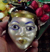
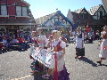
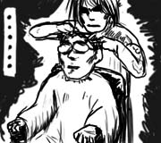

駐在員のマネージャから，Solvangという小さな町へプチトリップに誘われました．
あちらは夫婦で登場．僕は運転手です．僕の長距離運転の練習も兼ねているのだそうです．不安ですね．Solvangまでは2時間強のコースとなります．
おもしろくない結論なので先に書いてしまうのですが，フリーウェイも全く混み合っておらず，定期的に海辺→山間→荒野と風景が移り変わって行くので，走っていて結構楽しかったです．趣味がドライブという人の気持ちもなんとなく分かる気がしましたが，そんなのは僕じゃないので，忘れることにします．
Solvangは，デンマーク風の町並みが特徴の小さな観光地です．着いて早速，昼飯を食べるためにオープンカフェに移動．ソーセージと地ビールを注文します．天気はいいし，食べ物は美味しいし，アコーディオン引きのおじさんが奏でる陽気な音楽も聞こえてきます．あぁ，これはユルくていいなぁ．
でも，人間関係的に話題は会社．ぎゃふん．
その後，マネージャの奥さんが裁縫専門店でキルト地を見ると言うので，隣のクリスマス専門店で時間を潰します．年中クリスマス用品(カードやキャンドルや飾り付けなど)を売ってる店内には，しかしおよそクリスマスとは関係なさそうなグッズも紛れ込んでいます．

…王家の墓？
今日はDanish Dayということで，町の大通りではパレードが行われています．道路脇でぼんやりとパレードの子供たちがパラパラと飴玉をバラ撒くのを眺めながら，あれを取りに行くのは大人としてどうかなぁ，と思い悩んでいました．


おみやげに大量の地ビールを買い込むマネージャ夫妻を見て，僕もフラフラと3本ほど購入．飲む気もない癖に．なんとなく他人に従うのは，いい加減やめた方がいいと思います．
ホクホク顔のマネージャ夫妻を乗せ，15時頃にはSolvangを脱出．家に着く頃には，運転のしすぎで頭痛がしてきました．行きは景色が移り変わって行く様がよく見えたけど，帰りは方向的にあまり代わり映えしない感じだったのも敗因かと．
今日は，運転免許の実技試験の日です．
国際免許は単なる運転許可証．3か月以上米国内に滞在する人は，州の運転免許証を取得しなければいけません．試験は，筆記試験と実技試験があり，筆記試験はずいぶん前にパスしていたのですが，実技試験はなかなか予約が取れなくて今までズレこんでしまったのです．
実技試験は自分の車で受験します．免許がないのに自分で車を運転して試験会場まで出かけます．
実技試験のレーンに並んで待っていると，試験官がやって来て，指示器をつけろ，ライトをつけろ，クラクションを鳴らせ，など基本的な操作を聞いてきます．「emergency flash lightをつけろ」というので何だそれ！と焦っていたのですが，どうもハザードのことだったようです．先行き不安です．
試験官が助手席に乗り込み，いよいよ路上に出発です．試験会場の出口が近付くと「pull up to the corner」とか言われます．どういう意味ですか．全く検討がつかないので聞き返したのですが，何度聞いても「pull up!」と言われるばかり．仕方ないので角に沿って試験会場を出ようとすると，試験官は「いいから止まれ！」と言った後，「俺の言ってること分かってるか？」と語気を荒げます．そして「外へ行く前にここで後進を見る」と言います．どうやら角のところで止まれという意味だったらしい．だったら聞き返した時に「park」とか言い直して下さいよ…．(帰って辞書を引いたら，確かにpull up = 停車するって書いてありました)．
というわけで，かなりしょんぼりしながら路上へ出発．右へ曲がれ，左へ曲がれ，車線変更しろ，などが指示されます．そして5分ほど運転した後，再び試験会場へ戻ってきました．
「はい，じゃあ合格」．
早っ！これでいいんですか！
というわけで，仮免が発行され，今は正規の免許証が届くのを待っています．ちなみに，髪を切ってヒゲを剃って行ったのに，写真は撮られませんでした．筆記試験の時に撮った「無精髭＋ぼさぼさ髪」の写真が使われますか…そうですか…．
こちらに来て早3か月が経過．渡米前に短く刈って来た髪の毛も，すでに鬱陶しいくらいに伸びてきました．というわけでこちらに来て初めての散髪です．
「後ろと横を短めに」とか「もみあげは普通で」とか，そういう込み入ったことを英語で話す自信は，ハッキリ言って全然ないので，日本語の通じる理髪店を探します．日系のお店ばかり集めたイエローページという便利なものが日系スーパーマーケットなどで配られているので，これをパラパラめくります．
他の駐在員から「ここは若い人がよく行ってる」と聞いていたところが大きく載っていたので，そこに決め，地図を頼りにフラフラと出かけます．
看板が街路樹に隠れていたため，お店の前を3回ほど通り過ぎました．
理髪店の店先で，椅子に座って煙草を吸っている女性が見えたので，「外にまで並んでいるということは混んでるのかなぁ」と思って近付いたところ，「いらっしゃいませ」と言われました．店員でしたか．
席に通されると，腕にタトゥーを入れたお兄さんが「どんな感じにしますか？」と言って雑誌を差し出して来ました．雑誌には，髪をキメたストリート系の若者の写真がわんさか．どれにされても…という感じでどんどんページを捲っていると，ついにはモヒカンまで飛び出して来ます．なんかもう適当に無難そうなのを指差して「これで…」というのが精一杯ですよ．
タトゥーのお兄さんは「わかりました」と言うと，僕の髪の毛を櫛で引っ張ってハサミでねじ切る感じでバッサバッサと切断．櫛に絡み付いた髪の毛を床にベッと叩き落とします．そして終始無言．今までも理髪店は苦手でしたけど，ここに来て何だか極まった感じがします．

雑誌では分からなかったのですが，指定した髪型はずいぶんと短かったようで，バッサリ切られてツンツンにされました．頭がスースーとします．また3か月は散髪と無縁でいられるかと思うと望むところです．